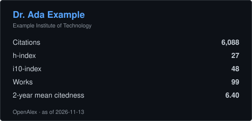
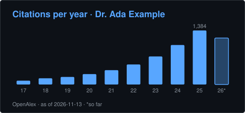

Your citations on your homepage, always current.
Citations, h-index and most cited papers from OpenAlex, as SVG cards for al-folio, academicpages or a GitHub profile, refreshed by a weekly workflow.

